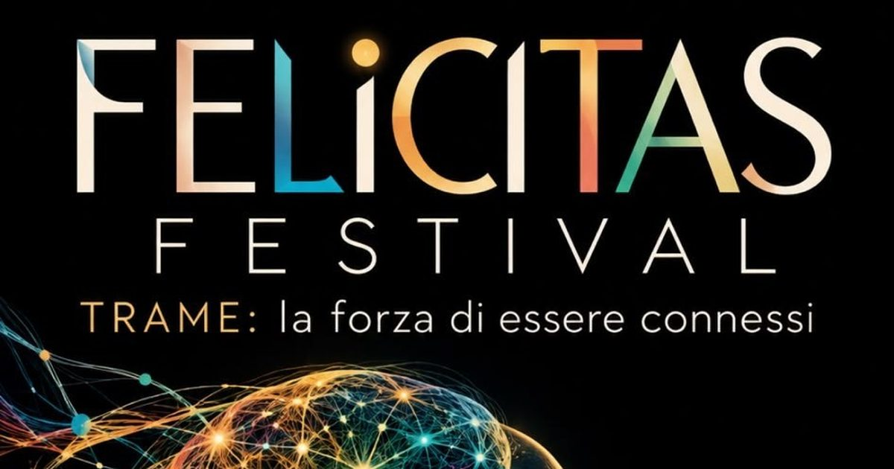

TERRA · IL GRUPPO DA CUI PARTI
Villaggio Felicitas · Civiltà Sarda
Il villaggio è il gruppo da cui ognuno parte. Dentro, ognuno è taggato col vicinato di appartenenza. Ogni livello ha chat, obiettivi, eventi e pubblicazione stampa.
CHI C'È DENTROproponiti ›

A
Alessandra RaggiocoordinaM
Marco CaddeocoordinaG
Giovanni Grecocoordina+
chi si proponedal 25 ottobreLE QUATTRO COSE DEL VILLAGGIO
GLI EVENTI

Felicitas Festival · TRAME21 novembre 2026 · Baratili San Pietro
›
Villaggio Felicitas - 25 ottobre OristanoCas'ale - Baratili · dalle 10
›GLI OBIETTIVI · KARMA YOGAtutti ›
Scritti dal villaggio. Chi li prende, li porta nelle sue cose da fare.
○
Mappare i produttori del territorioscritto da Gabriele Dettori · coordina il villaggio · in coda
○
Mettere a disposizione un punto di ritiroscritto da Gabriele Dettori · coordina il villaggio · in coda
○
Fare da referente di un comune o di una zonascritto da Gabriele Dettori · coordina il villaggio · in coda
LA CHAT DEL VILLAGGIO
Gabriele Dettori · coordinaBuongiorno a tutti stelline col guscio
🎙
Scrivi al villaggio…
IL VICINATO
L'etichetta che ognuno porta: il gruppo localizzato dentro il villaggio. Nessuno può attivare un vicinato, ma può proporsi per farne parte.
✦
Baratili San Pietro · Oristanoil vicinato del Festival · chi lo coordina: [ da nominare ]
LE QUATTRO COSE DEL VICINATO
CHATtra chi è nel vicinato
OBIETTIVIi bisogni del territorio
EVENTIle feste del vicinato
21 nov
STAMPApubblicare e stampare come vicinato
·
NUCLEO DEL VILLAGGIO E RESPONSABILI DEI VICINATI
Era «Gruppi Cooperativi». Ora: chi coordina il villaggio e chi risponde di un vicinato. Un gruppo chat per loro.
A
Alessandra RaggiocoordinaM
Marco CaddeocoordinaG
Giovanni Grecocoordina·
responsabileBaratili S.P. · [ da nominare ]LA CHAT DEL COORDINAMENTO
qui arrivano anche le proposteChi si propone per un vicinato scrive in una chat ad hoc nel Mutuo aiuto: notifica nell'app e mail a ognuno di voi.
Scrivi al coordinamento…
LE COSE DEL COORDINAMENTO
▦
Felicitas Festival · la squadra5 cose da fare · la lavagna
›
○
Chi coordina può nominareun responsabile di vicinato · un coordinatore
›I TEAM DEI PARTNER
Un partner ha il suo team con le stesse cose — chat, obiettivi, eventi, stampa — ma con accesso ristretto al team, collegato al villaggio o al vicinato.
+
[ il primo team partner ]collegato a: Civiltà Sarda · [ vicinato ]
◌ ristrettoLE QUATTRO COSE DEL TEAM
CHATsolo il team
OBIETTIVIla lavagna del team
EVENTIgli eventi del team, anche nel villaggio
STAMPApubblicare e stampare come team
COSA VEDE IL VILLAGGIO
il teamche esiste, e a cosa è collegato
dentrosolo chi è nel team
in bachecaquello che il team decide di pubblicare al villaggio
bozza · i quattro livelli — persone vere: i coordinatori del villaggio dal database (orma del villaggio Civiltà Sarda, ruolo «coordinatore»). Vicinati: la tavola è vuota, Baratili San Pietro è il vicinato del Festival. Nucleo oggi: 1 persona. Team partner: la tavola «squadre» è vuota. Le regole di chi vede cosa (le autorizzazioni «da capo») vanno riscritte in SQL dopo la conferma del modello. «Stampa»: chi paga la stampa del gruppo è da decidere.